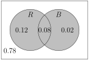

Section 8.2 Cardinality and Probability
In this section, we enumerate the size or cardinality of sets, and show how this connects to probability.
Subsection 8.2.1 Cardinality
We define the terms and notation we use to measure set size.
Definition 8.2.1.
Given a set \(A\text{,}\) the cardinality of \(A\) denoted \(|A|\) is the number of elements in \(A\text{.}\)
Example 8.2.2. Cardinality of Sets.
Consider the sets
- \(|A|=5\text{,}\) \(A\) has 5 elements.
- \(|B|=3\text{,}\) \(B\) has 3 elements.
- \(|C|=2\text{,}\) \(C\) has 2 elements, 1 and 4.
We note the following about cardinality:
Remark 8.2.3.
Let us consider \(|A\cup B|.\) To see this, let's consider Example 8.1.12 and let
Then let \(A=\{Bryan, Esmeralda\}, B=\{Bryan, Francis\}\text{.}\)
We note that \(|A|=2, |B|=2\text{.}\) But if we just took \(2+2\text{,}\) we note that Bryan is counted in both sets, but the cardinality of \(\{Bryan, Esmeralda, Bryan, Francis\}=3\text{,}\) since there are only 3 elements in \(A\cup B\text{.}\) We note then that we double counted the element(s) in both sets, that is \(A\cap B\text{.}\)
Remark 8.2.5.
Given sets \(A, B\text{,}\) we have that:
This is the size of \(A\) plus the size of \(B\text{,}\) then the overlap removed.
We can see this here with the following Desmos graph. Initially, \(P(A)=0.6, P(B)=0.4, P(A\cap B)=0.3, P(A\cup B)=0.6+0.4-0.3=0.7\text{.}\) Adjust the probablities, and slide the regions to change the overlap to see how that effects the values!
Example 8.2.6. Student Athletes and Bio Majors.
Suppose a class of 25 had 12 student athletes, 8 biology majors, and 5 students who were both student athletes and biology majors. How many students are either student athletes of biology majors.
If we let \(A\) denote student athletes and \(B\) denote biology majors, we have:
thus \(|A\cup B|=|A|+|B|-|A\cap B|=12+8-5=15.\) 
Checkpoint 8.2.8. Hotdogs and Hamburgers.
A food truck sells only burgers and hotdogs. We have that 20 people ordered something, 18 people ordered burgers, 6 ordered hotdogs, how many people ordered both?
If we let \(B\) denote people who ordered burgers and \(H\) denote people who ordered hotdogs, we have:
thus
So four people ordered both.
Subsection 8.2.2 Probability
In probability, an experiment is an occurrence with a measurable result. Each instance of an experiment is a trial. The possible results of each trial are called outcomes. The set of all possible outcomes for an experiment is the sample space for that experiment.
So the sample space of flipping a coin would be
Whereas the sample space of rolling a single six-sided dice would be
In the context of an experiment, we understand the sample space to be the universal set.
Definition 8.2.10.
Given an experiment with sample space \(S\text{:}\)
- An event \(A\) is a subset of \(S\text{.}\)
- If each outcome in the sample space is equally likely, then the probability of \(A\text{,}\) denoted \(P(A)\) is\begin{equation*} P(A)=\frac{|A|}{|S|}. \end{equation*}
Remark 8.2.11.
But what does it mean for an event \(A\) to have probability \(P(A)\text{?}\) It means that if I repeat the experiment over and over, the proportion of them where \(A\) is true should be \(P(A)\text{.}\)
So if I roll a die over and over, the proportion of them that give me a 6 over time should be \(\frac{1}{6}\text{.}\) So if we roll a dice 10000 times, we would expect one sixth of them to come up heads:
Example 8.2.12. Probability and Die Rolls.
Consider the outcomes of rolling a single six-sided dice. Let \(X\) denote the event “The outcome is even” and \(Y\) denote “The outcome is at least a 4”. Find the follo0wing:
- \(X\text{.}\)
- \(Y\text{.}\)
- \(X\cup Y\text{.}\)
- \(X\cap Y\text{.}\)
- \(X\cap Y^c\text{.}\)
- \(X^c\cup Y\text{.}\)
Then find:
- \(P(X)\text{.}\)
- \(P(Y)\text{.}\)
- \(P(X\cup Y)\text{.}\)
- \(P(X\cap Y)\text{.}\)
- \(P(X\cap Y^c)\text{.}\)
- \(P(X^c\cup Y)\text{.}\)
Notice:
- \(X=\{2,4,6\}\text{.}\)
- \(Y=\{4,5,6\)\text{.}\)
- \(X\cup Y=\{2,4,5,6\}\text{.}\)
- \(X\cap Y=\{4,6\}\text{.}\)
- \(X\cap Y^c=\{2\}\text{.}\)
- \(X^c\cup Y=\{1,3,4,5,6\}\text{.}\)
Observe the venn diagram:
From above:
- \(P(X)=\frac{3}{6}\text{.}\)
- \(P(Y)=\frac{3}{6}\text{.}\)
- \(P(X\cup Y)=\frac{4}{6}\text{.}\)
- \(P(X\cap Y)=\frac{2}{6}\text{.}\)
- \(P(X\cap Y^c)=\frac{1}{6}\text{.}\)
- \(P(X^c\cup Y)=\frac{5}{6}\text{.}\)
We can modify our above venn diagram to list probabilities:
Remark 8.2.15.
We note the following about probability:
- \(P(A^c)=\frac{|S|-|A|}{\mathcal{U}}=\frac{|S|}{|S|}-\frac{|A|}{|S|}=1-P(A)\text{.}\)
- \(P(\emptyset)=\frac{0}{|S|}=0\text{.}\)
- \(P(A)=P(A\cap B)+P(A\cap B^c)\text{,}\) since the outcomes which constitute \(A\) all either belong to \(B\) or they don't.
- \(P(A\cup B)=\frac{|A\cup B|}{|S|}=\frac{|A|+ |B|-|A\cap B|}{|S|}=P(A)+P(B)-P(A\cap B)\text{.}\)
Definition 8.2.16.
Two sets \(A, B\) are mutually exclusive or disjoint if \(P(A\cap B)=0\text{.}\) In other words, \(A\) and \(B\) cannot occur at the same time.
We can see in the interactive below, that if we roll a dice 1000 times, then the probabilty of \(A\) the outcome being even will be about \(P(A)=\frac{1}{2}\text{,}\) the probabilty of \(B\) the outcome being greater than or equal to 4 will be about \(P(B)=\frac{1}{2}\text{,}\) for \(A\cap B\text{,}\) both occuring, is about \(P(A\cap B)=\frac{1}{3}\) and for \(A\cup B\) either occuring, is about \(P(A\cup B)=\frac{1}{2}+\frac{1}{2}-\frac{1}{3}=\frac{2}{3}.\) Hit the shuffle on the top left to “re-roll” the dice.
We can also do this with sage. We roll a dice \(n=1500\) times:
Checkpoint 8.2.17. Weather and Mood.
Suppose that today, there is a 20% chance it rains, a 10% chance that I will be in a bad mood, and an 8% chance that it rains and I'm in a bad mood.
- What is the probability it rains or I'm in a bad mood?
- What is the probability it rains and I'm in a good mood?
- What is the probability it doesn't rain or I'm in a bad mood?
If we let \(R\) denote “It rains” and \(B\) denote “I am in a bad mood” then we are given \(P(R)=0.2, P(B)=0.1, P(R\cap B)=0.08\) and may fill out the following venn diagram:
- This is \(P(R\cup B)\text{,}\) which we could compute \(P(R\cup B)=0.12+0.2+0.8=0.22\) or \(P(R\cup B)=P(R)+P(B)-P(R\cap B)=0.2+0.1-0.08=0.22\text{.}\) 
Figure 8.2.19. \(R\cup B\) - This is \(P(R\cap B^c)\text{,}\) which we can see is \(P(R\cap B^c)=0.12\text{.}\)
Figure 8.2.20. \(R\cap B^c\) - This is \(P(R^c\cup B)\text{,}\) which we can see is \(P(R^c\cup B)=0.78+0.02+0.08=0.88\text{.}\)
Figure 8.2.21. \(R^c\cup B\)
Checkpoint 8.2.22. Student Research and Conferences.
Suppose that in a Mathematics department, 20% of the students have done undergraduate research, 25% have gone to conferences. We also have that 30% have done either one or the other.
- What is the proportion of students who have done both undergraduate research and gone to conferences?
- What is the proportion of students who have gone to conferences but without having done undergraduate research?
- What is the proportion of students have neither done undergraduate research nor gone to a conference?
If we let \(R\) denote “has done undergraduate research” and \(C\) denote “has gone to a conference” then we are given \(P(R)=0.2, P(C)=0.25, P(R\cup C)=0.3\text{:}\)
- This is \(P(R\cap C)\text{:}\)\begin{align*} P(R\cup C)\amp = P(R)+P(C)-P(R\cap C) \\ 0.3\amp = 0.2+0.25-P(R\cap C) \\ P(R\cap C)\amp=0.15 \end{align*}From here we may fill out the following diagram
Figure 8.2.23. \(R, C\) and their probabilities - This is \(P(R\cap C^c)\text{,}\) which we can see is \(P(R\cap C^c)=0.05\text{.}\)
Figure 8.2.24. \(R\cap C^c\) - This is \(P(R^c\cap C^c)\text{,}\) which we can see is \(P(R^c\cap C^c)=0.7\text{.}\)
Figure 8.2.25. \(R^c\cap C^c\)
Checkpoint 8.2.26. Rolling two dice.
Roll two six-sided dice. Let \(A\) denote “first die outcome is a 6”, \(B\) denotes “the sum of the outcomes is at least 10” and \(C\) denote “second die outcome is a 3”. Find the following:
- \(P(A)\text{.}\)
- \(P(B)\text{.}\)
- \(P(C)\text{.}\)
- \(P(A\cap B)\text{.}\)
- \(P(A\cup B)\text{.}\)
- \(P(B\cap C)\text{.}\)
We first note that \(|S|=36\) possible pair of die rolls:
- Note that \(A= \{(6,1),(6,2),(6,3),(6,4),(6,5),(6,6)\}\) so \(P(A)=\frac{6}{36}.\text{.}\)
- Note that \(B= \{(4,6),(5,5),(5,6),(6,4),(6,5),(6,6)\}\) so \(P(B)=\frac{6}{36}\text{.}\)
- Note that \(C= \{(1,3),(2,3),(3,3),(4,3),(5,3),(6,3)\}\) so \(P(C)=\frac{6}{36}\text{.}\)
- Note that \(A\cap B= \{(6,4),(6,5),(6,6)\}\) so \(P(A\cap B)=\frac{3}{36}\text{.}\)
- \(P(A\cup B)=P(A)+P(B)-P(A\cap B)=\frac{6}{36}+\frac{6}{36}-\frac{3}{36}=\frac{9}{36}\text{.}\) Also \(A\cup B=\{(4,6),(5,5),(5,6), (6,1),(6,2),(6,3),(6,4),(6,5),(6,6)\}\) so \(P(A\cup B)=\frac{9}{36}\text{.}\)
- Note \(B\cap C=\emptyset\) so \(P(B\cap C)=0\text{.}\) On other words \(B, C\) are disjoint.